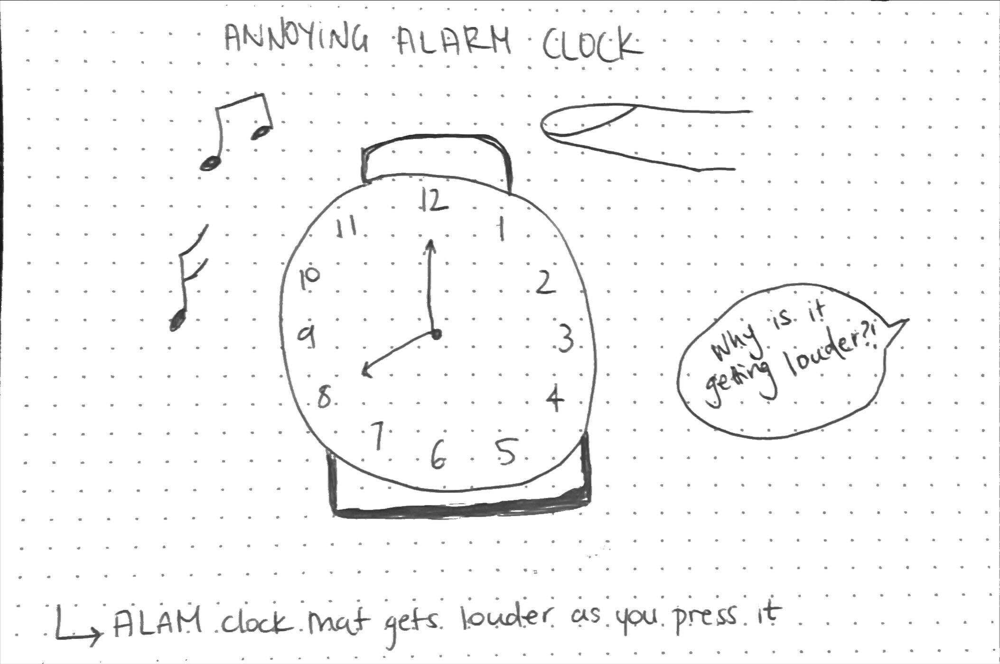

| ACTIVITY | OUTPUT |
|---|---|
| LED LIGHT AND FAN |
|
| POTATO PIANO | |
| Servo | |
| Processing with Physical Computing | During this excersize, I found a way to `circuit bend,' which created a glitchy effect and altered the view of the processing sketch. I liked the experimental output and found the result of this to be an experiment into the possibilities of analouge glitch. | Chindogu SKETCH |  |